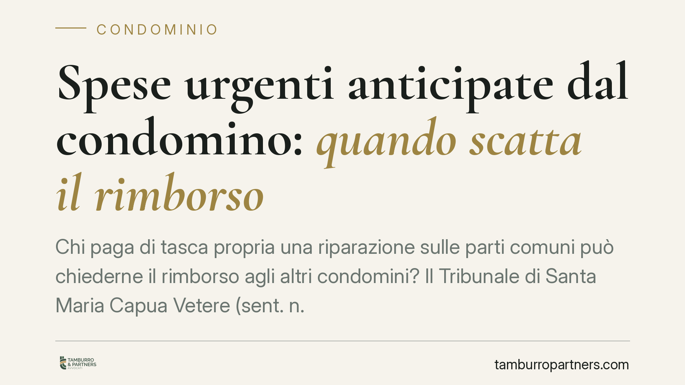

Spese urgenti anticipate dal condomino: quando scatta il rimborso
Chi paga di tasca propria una riparazione sulle parti comuni può chiederne il rimborso agli altri condomini? Il Tribunale di Santa Maria Capua Vetere (sent. n. 1665/2025) ribadisce che il diritto sorge solo quando la spesa è urgente e indifferibile. Un principio che pesa su chi interviene d'iniziativa, senza passare dall'assemblea o dall'amministratore.

Il caso
Un condomino sostiene un esborso per lavori sulle parti comuni dell'edificio e, successivamente, pretende dagli altri condomini il rimborso pro quota. I convenuti si oppongono: nessuna delibera assembleare aveva autorizzato l'intervento, e l'opera sembrava collegata a lavori che interessavano anche la proprietà esclusiva di chi aveva pagato.
Il Tribunale di Santa Maria Capua Vetere, con la sentenza n. 1665 del 19 maggio 2025, affronta la questione riconducendola interamente all'unico parametro che conta: l'urgenza della spesa.
Inquadramento normativo
La norma di riferimento è l'art. 1134 del codice civile, rubricato "Gestione di iniziativa individuale". La disposizione stabilisce che il condomino che ha assunto la gestione delle parti comuni *senza autorizzazione dell'amministratore o dell'assemblea* non ha diritto al rimborso, salvo che si tratti di spesa urgente.
La regola generale, dunque, è l'assenza di diritto al rimborso: il condominio si amministra per deliberazione collettiva, non per iniziativa del singolo. L'eccezione è l'urgenza. Per "spesa urgente" la giurisprudenza intende quella che, secondo il criterio del buon padre di famiglia, non può essere differita senza pregiudizio per la cosa comune o per la sicurezza, e che non consente di attendere i tempi di convocazione e deliberazione dell'assemblea.
La pronuncia in esame si inserisce in questo solco. Due i chiarimenti rilevanti. Primo: l'assenza di accordo preventivo non esclude di per sé il rimborso, se l'urgenza sussiste. Secondo: la circostanza che i lavori sulle parti comuni siano stati eseguiti contestualmente a interventi sulla proprietà privata del condomino non fa venire meno il diritto, purché la parte di spesa comune fosse effettivamente urgente e indifferibile.
Implicazioni pratiche
Il punto di equilibrio è netto. L'urgenza è l'unico fatto costitutivo del diritto al rimborso. Non basta che la riparazione fosse utile o opportuna: deve essere stata non rinviabile.
Per il condomino che interviene, questo significa un onere probatorio preciso. Dovrà dimostrare non solo di aver pagato, ma che la spesa aveva natura urgente al momento dell'intervento. In mancanza di questa prova, il costo resta a suo carico, anche se l'opera ha giovato all'intero edificio.
Sul versante opposto, i condomini convenuti non possono limitarsi a eccepire l'assenza di delibera: se l'urgenza è provata, l'autorizzazione mancata diventa irrilevante.
Particolare attenzione merita l'ipotesi dei lavori "misti", che toccano sia parti comuni sia proprietà esclusive. Qui serve una distinzione chiara delle voci di spesa: il rimborso riguarda solo la quota comune, e solo se urgente. La commistione documentale rischia di indebolire la pretesa.
Cosa fare in concreto
- Documentate l'urgenza prima di intervenire. Fotografie, relazioni tecniche, segnalazioni di pericolo: raccogliete ogni elemento che provi l'indifferibilità della riparazione.
- Avvisate subito l'amministratore, anche quando i tempi non consentono una delibera. Una comunicazione tempestiva (PEC o raccomandata) rafforza la buona fede e la ricostruzione dei fatti.
- Separate le spese nei lavori misti. Pretendete fatture distinte per gli interventi sulle parti comuni e per quelli sulla proprietà privata, così da isolare la quota rimborsabile.
- Conservate preventivi e documentazione di spesa per l'intero periodo utile all'azione di rimborso, calcolando i termini di prescrizione del credito.
- Valutate l'azione legale solo su una base probatoria solida. Senza prova dell'urgenza, il recupero del credito è esposto al rigetto.
Un principio da non banalizzare
La sentenza conferma che l'art. 1134 c.c. non è uno strumento per aggirare l'assemblea. È una valvola di sicurezza, pensata per le sole situazioni in cui attendere la deliberazione collettiva significherebbe lasciare degenerare un danno. Chi intende avvalersene deve muoversi con prudenza e, soprattutto, con documentazione.
---
*Contributo informativo a cura di Tamburro & Partners - Avv. Giuseppe Tamburro. Non costituisce parere legale.*
Ogni condominio ha una storia a sé.
Se gestisci un'amministrazione e vuoi un confronto su una specifica questione condominiale, scrivi allo studio. Ti rispondiamo entro un giorno lavorativo.